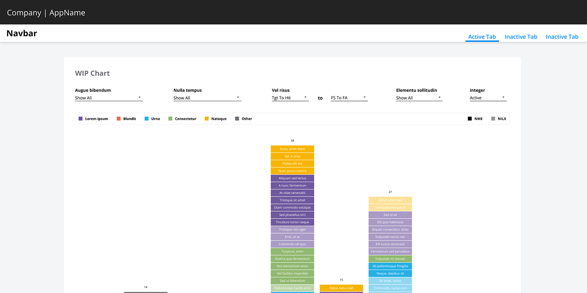
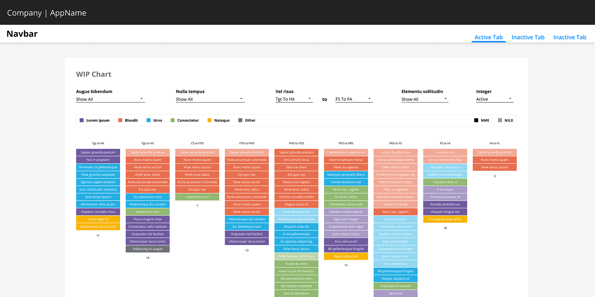
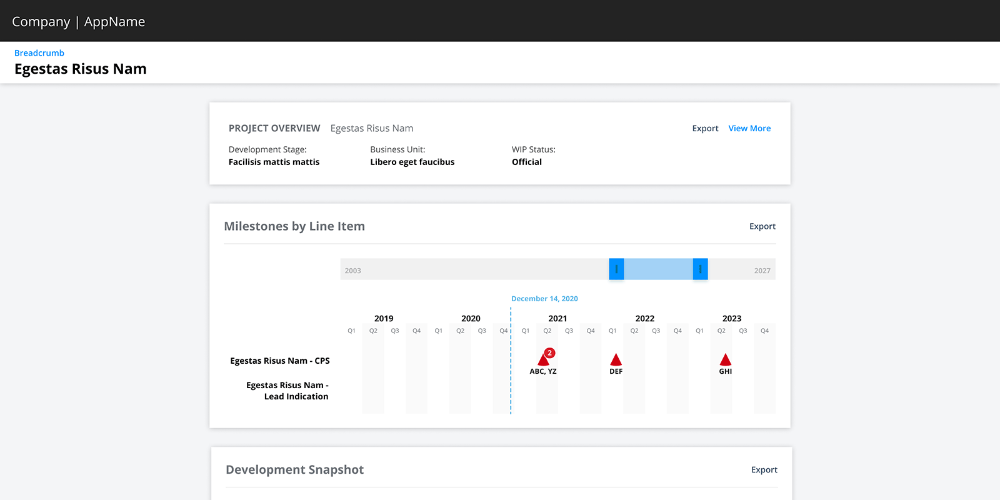
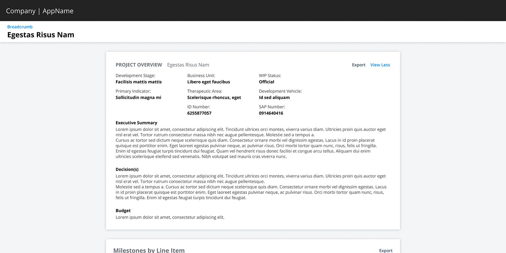
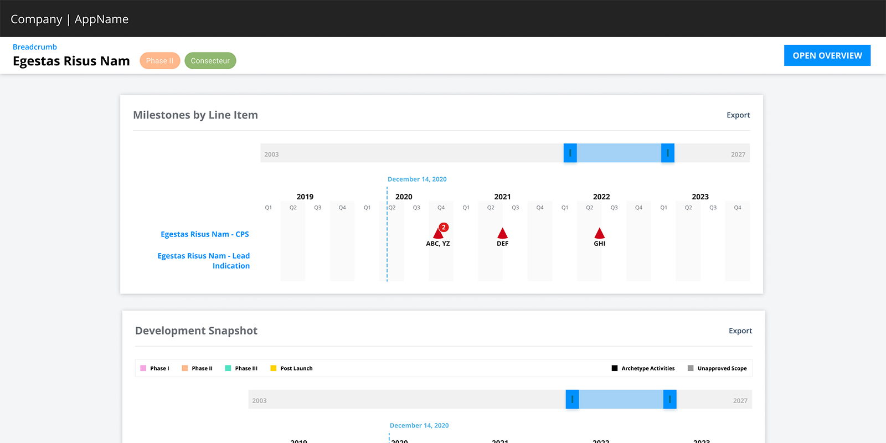
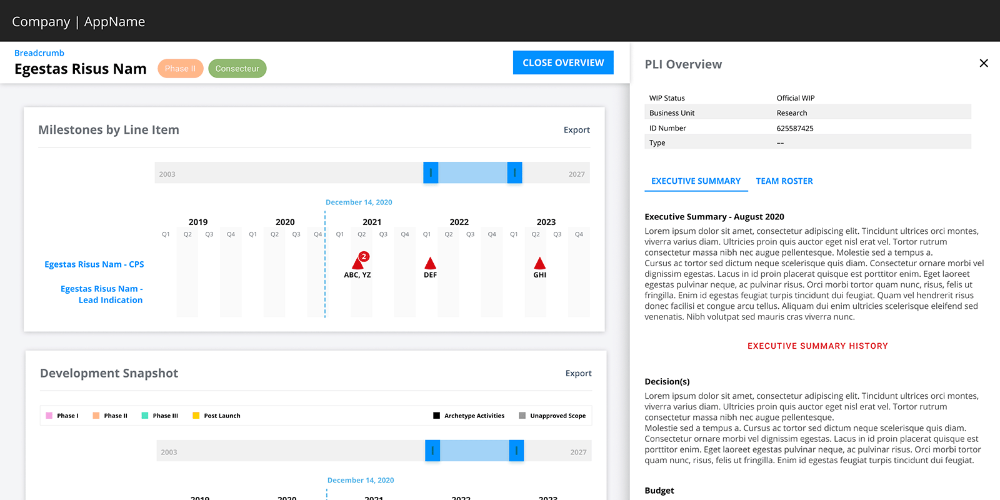

Northstar Design Brief
Inheriting the UX of another Designer
The Challenge
In March, 2020, I accepted a role as a Senior UX Consultant. I was assigned to an application as the designer… joining a UX Researcher. The app was nearing it’s 2.0 release.
Context
This app is a data-visualize tool built for the executive team of a Fortune 500 pharmaceutical company. It allowed users to monitor the progress of ongoing research programs… and make informed decisions based on past performance and future budgets. “Northstar” was built to replace existing Excel spreadsheets and Tableau Reports.
The WIP Chart
Why is that upside down?
The WIP Chart was the landing page/dashboard for most users. It displayed the current projects in a Kanban-style fashion. Users could hover over the individual cards to see additional information (or navigate to the project page).

My Concerns
- Column headers were not visible
- Shorter columns were not visible on the screen
- The distance between filters and filtering results
My Proposal
Using FireFox’s Inspection Tools, I changed a few lines of CSS to reverse the column order, and set the flexbox alignment to the top. These simple updates made the WIP Chart more user-friendly.

Outcome
This was an instance where changing minds was harder than changing the code. The business stakeholder said:
I’ll have to think about this. The WIP has looked like this for 20 years.
I asked the Front-end Developer if it was possible to get these updates made in a dev environment. After interacting with the new design, and being able to see the changes side-by-side, the stakeholder agreed to push the changes to Production.
Drawer over Card
The Project Overview Card
The Project Overview was a collapsed hero component that housed additional data points and monthly summaries behind a “View More” button.

My Concerns
- The body’s main container had a max-width of 968px
- Cluttering the UI by repeating the project name
- Opening the overview pushed the cards below further down the page

My Proposal
- Remove the hero card to raise the other cards on the screen
- Display the Development Stage and Business Unit as chips next to the project name (where they are visible at all times)
- Create a larger overview that slides-in as a drawer

Removing the max-width allowed more of the timelines to be seen. By moving the overview inside a drawer, users can read the important information while still being able to scroll the left side… allowing them to read the Summaries while viewing the financial charts at the very bottom of the page.

Outcome
The drawer was presented to users as a way to bring in additional information about clinical trials. It was implemented and became the pattern for drilling down for more information. Tabbed drawers allowed even more data to be displayed. The need to drill down any further would open a modal window.